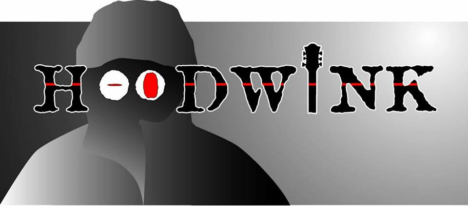

Site created by JMJ Media © 2016
Hoodwink are a Cheshire based five-piece Rock covers band who, although only having been established for the last year, have many previous years of experience in the music business between them. They are influenced by many genres of music and cover a wide variety of songs from Queen to Simple Minds, Pink Floyd to Muse. They predominantly play in the North West, North Wales and the North Midlands but are more than happy to take their Rock'n'Roll wherever it will get feet tapping, heads nodding and people singing and dancing. We simply love music.
In the words of Friedrich Nietzsche - "without music, life would be a mistake"